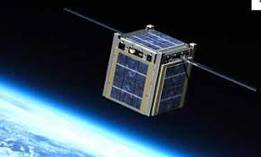
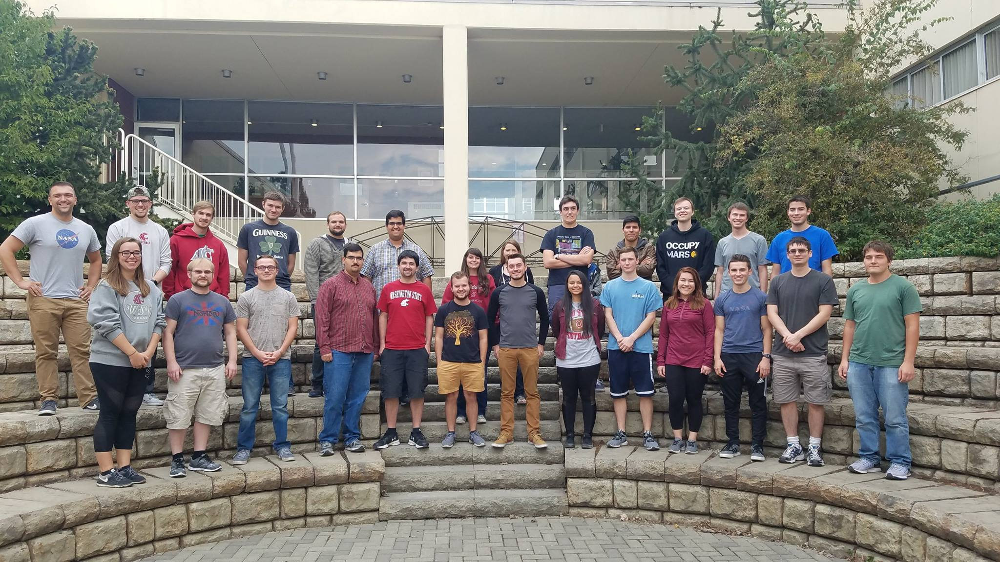
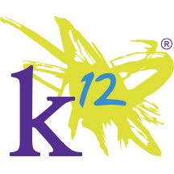
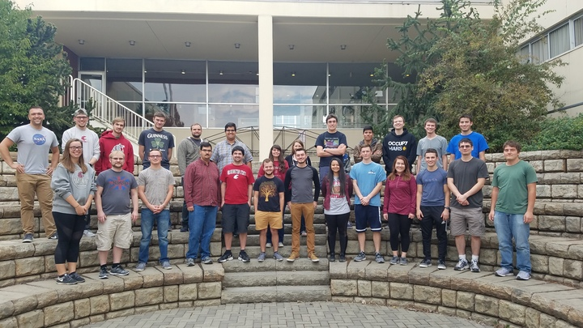
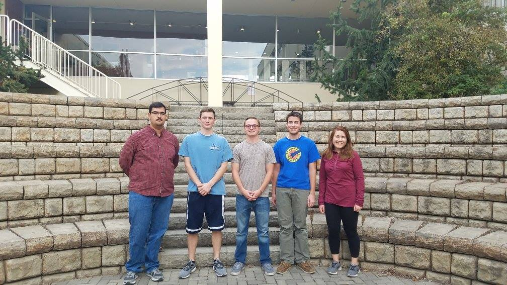
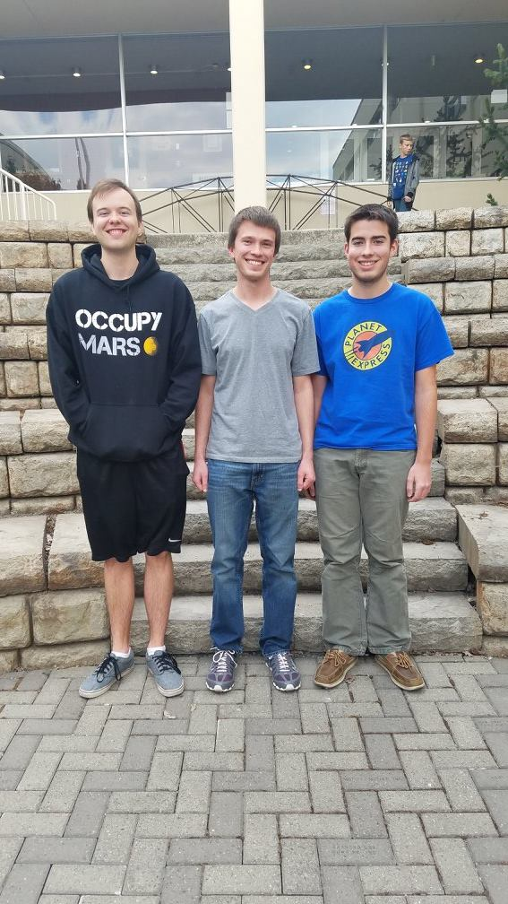
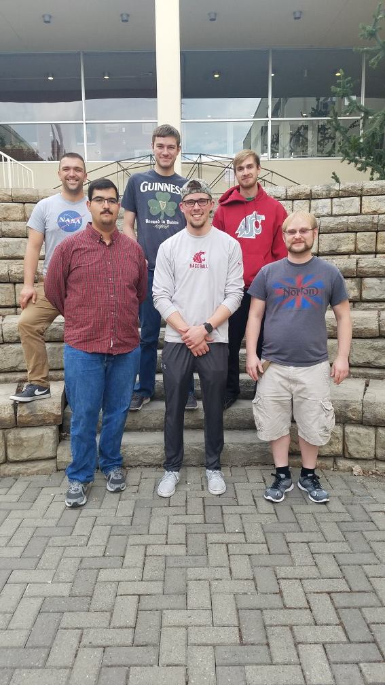
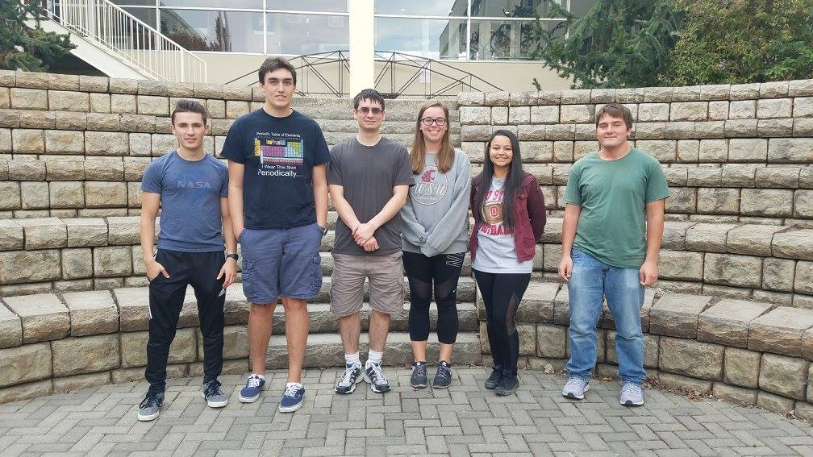
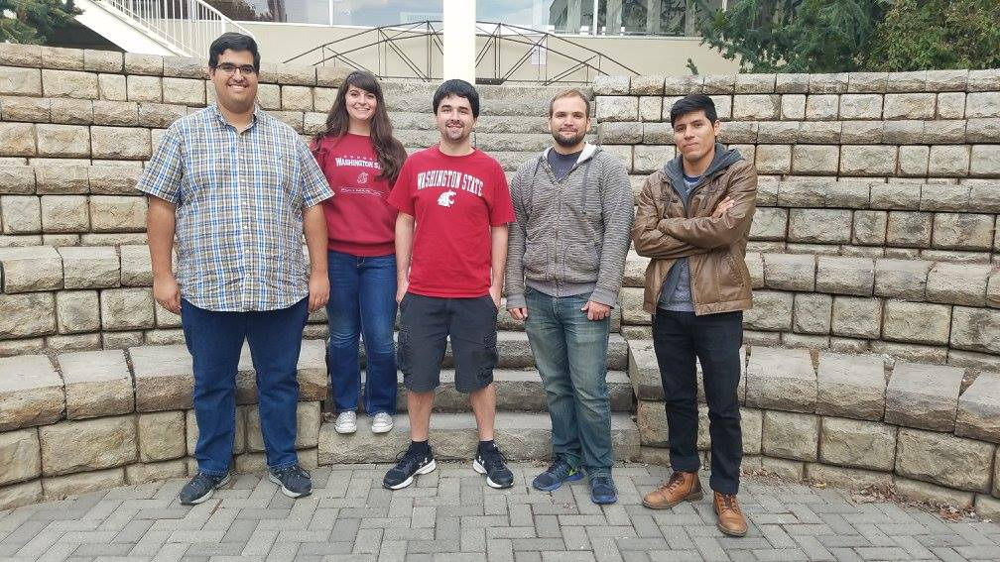

Cougs in Space


Cougs in Space is Washington State University’s first student organization aimed at space exploration.
CougSat I is a 1U class satellite, a 1.3kg satellite that aims to communicate to WSU in orbit and take pictures of Earth.
By designing, launching, and maintaining CougSat I, we hope to create a lasting organization where undergraduate engineers and scientists can come to learn, enhance their skill set, and most importantly contribute to an idea that they love.

We have 5 main teams for our club. Please click on the specific team to see their content, their updates and descriptions.
The teams are: Systems, Power, Attitude, Structures, and Thermal.
 As a company or organization, your large donations are invaluable to us. Corporate donations are not only a great way to advertise (we will put your logo on our shirts and name on a plaque), but are a great way to strengthen your connection to the University.
By donating you will help fund the engineering process that will prepare your future interns or graduate hires with real world and complex project experience.
As a company or organization, your large donations are invaluable to us. Corporate donations are not only a great way to advertise (we will put your logo on our shirts and name on a plaque), but are a great way to strengthen your connection to the University.
By donating you will help fund the engineering process that will prepare your future interns or graduate hires with real world and complex project experience.
Cougs in Space meet at the WSU Pullman Campus on Wednesdays and Sundays.
On Wednesday’s we hold an informational update meeting in The SPARK, room 223, from 5:30 – 7:00PM.
On Sunday, we hold an engineering meeting designed to let teams work in a creative and constructive atmosphere.
Meetings on Sundays are held in the Frank Innovation Zone in Dana Hall, from 2:00 – 3:30PM. These meetings are open to anybody!
Without a shadow of a doubt launching a satellite is an expensive process. From purchasing a ceramic capacitor to using a state of the art clean room at $4,000 a month, a large chunk of change is required.
The following companies, organizations, and individuals have already assisted us in pursuing our goal of space flight, and we cannot thank them enough.
Aaron S. Crandall, PH.D. WSU Department of Electrical Engineering and Computer Science.
The Boeing Company
Rigol

Cougs in Space is actively seeking to teach others about what we are learning as we go.
A big part of our mission is K-12 outreach so we can get students of all ages interested in space.
What we are looking to do is provide hands on workshops, presentations, or just talks intended to spark an interest in space and engineering.
If you would like to find out more and arrange a meeting please send us a message!

Split into teams to design and implement the Power System, Attitude Control, Communication System, Thermal Analysis, and Structure Design, we ensure that the basic requirements to launch a satellite are met.
If you are interested in learning more about our teams, or a specific team, please check out Our Teams page!
Dubbed CougSat I, this will be WSU’s foot in the door to the space industry. Set to launch ideally in 2019, this spacecraft will be equipped with a self-made Structure, set of Magnetorquers, Power System, Communication System, and more.
The satellite will endure freezing temperatures, extreme heat, out of control spinning, and constant power limitations due to its size.
Through clever engineering and dedicated teamwork, soon there will be a Cougar Logo orbiting earth.
Cougs in Space meet at the WSU Pullman Campus on Wednesdays and Sundays.
Team Systems
The ground control and systems integration team is fully responsible for the multi-module integration of all major cube sat sub-systems as well as the entire ground to satellite communications API. On the ground control side, our goal is to build and design an involved and extremely functional API that will be operated by the chief ground communications operator throughout the life span of the cube satellite. Our ground control API will have many features and nuances that will define what kinds of data, commands, telemetry, and operational status information we would like to send and receive from our satellite throughout the project.
Inject 5 posts here

The power systems team is responsible for the generation, management, and distribution of power to all of the loads found on the cubesat.
Power generation is centered around harvesting energy from the sun through the use of high-efficiency solar panels mounted on the outside faces of the cubesat.
Power management consists of regulating the generated power to ensure that each load is supplied with an adequate amount of power with the desired characteristics (voltage, current, etc.) needed for proper operation.
High energy density batteries are also to be used to store power for when the cubesat is not receiving sunlight.
Power distribution involves switching power to the various loads at the desired operation times such that power can be supplied reliably and efficiently to ensure optimal operation while also conserving power for high-priority loads.
Inject 5 posts here

On the on-board systems and integration side, we are highly motivated on completely developing an in house total flight control and analysis software that will enable us to communicate directly with all integrated subsystems developed by the other teams.
We are striving to build the bridge between all devices, both physically and abstractly, that will enable complete device comprehension and coherence.
We expect that this will allow for all-inclusive control and communication between our primary ground control station and all centralized on-board systems and subsystems.
Inject 5 posts here

The Structures team is primarily made up of Mechanical and Material Science Engineering majors and has the responsibility of managing the physical needs of the club.
Apart from the CubeSat frame, we will design and build any other needed structures, such as joints, fastenings, deployables, and mountings for both the spacecraft and for testing purposes.
We must ensure the physical durability of the craft by following the required standards and by modeling and testing the vibration response from launch vehicle specifications.
We are composing CAD models of all spacecraft components and managing the mass budget, while also controlling volume allocation.
Inject 5 posts here

The primary goal of the Thermal Systems team is to protect the satellite from the extremely harsh conditions of space.
Our plan is to maintain the satellites longevity throughout the mission by protecting all components within our cubesat.
To ensure survivability, we are researching and testing material that will combat the rapid and intense temperature changes, extreme radiation, and the thermal expansion of the cubesat in space.
Inject 5 posts here